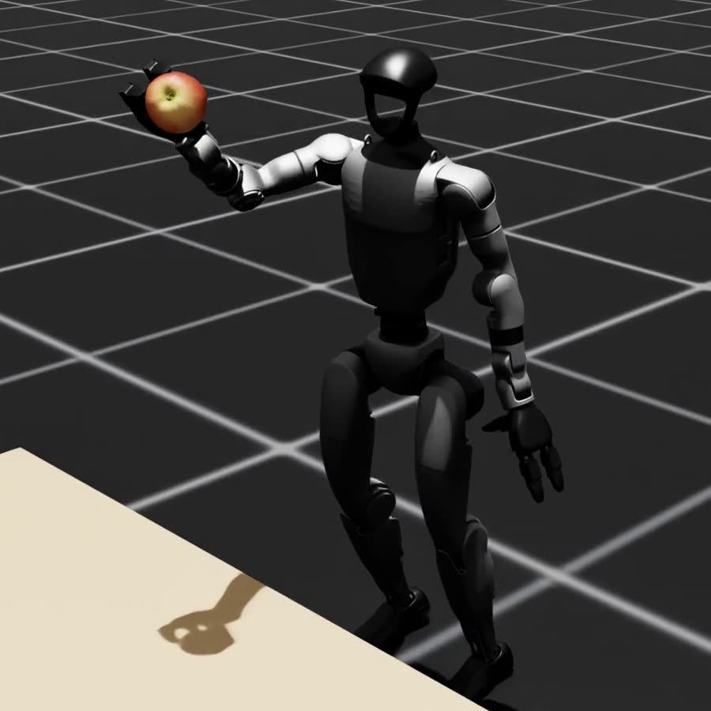
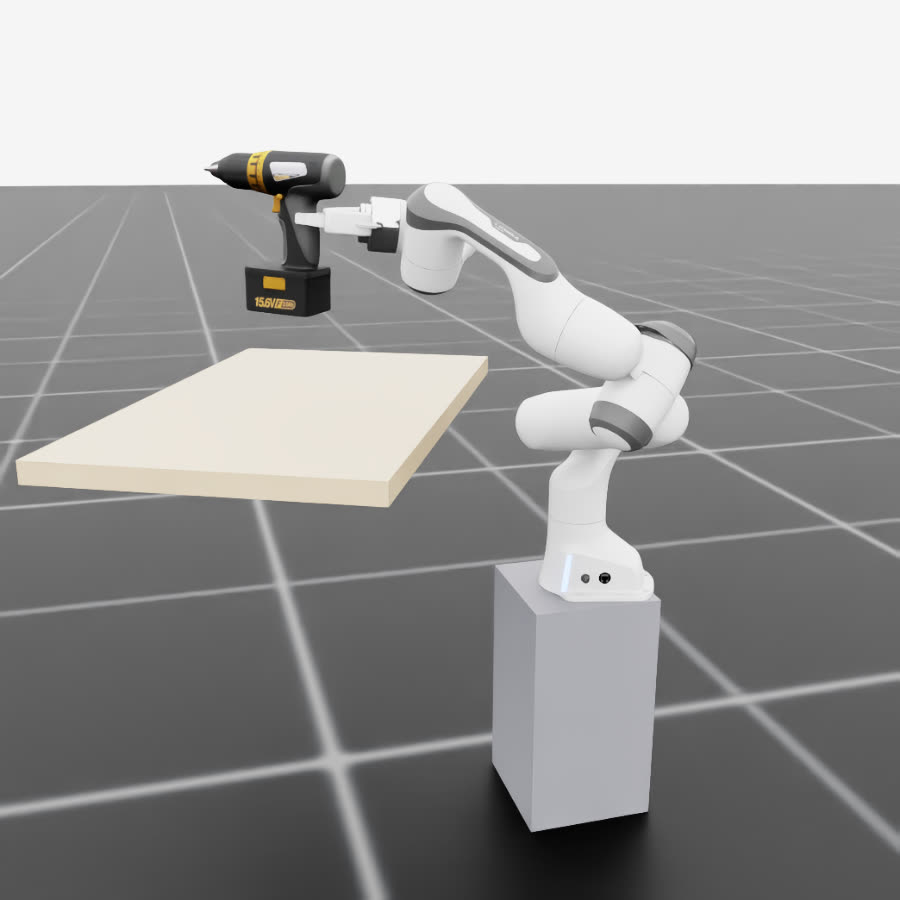
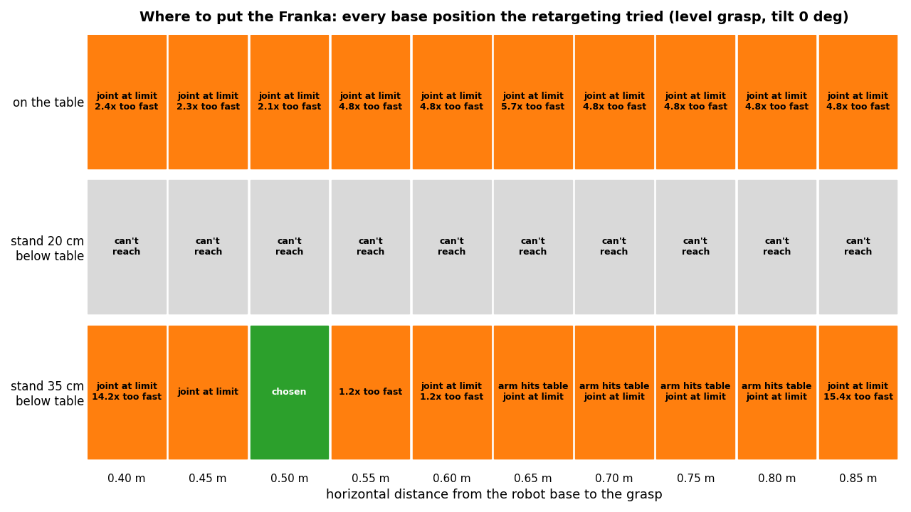

I ran NVIDIA's GRAIL pipeline end to end on a video I generated myself: a kid picking up a cordless drill, turned into motion for the Unitree G1 humanoid. Then I replaced the G1 with a Franka Panda arm and its two-finger gripper, and checked the result in physics simulation. Every step below has the video it produced.
GRAIL on my own video
Done
Scene, video, 4D reconstruction and G1 retargeting all run here. NVIDIA's trained policy lifts my drill in physics.
Franka Panda retargeting
Done for one motion
The kid's grasp moved onto the Franka gripper and verified in Isaac Lab: the drill is lifted 21 of 22 cm and held.
Policy training
Not started
GRAIL's training setup expects 8 GPUs. Short training test runs passed on NVIDIA's data and mine.
The robots
Two robots, one task
GRAIL was built for a humanoid that copies the whole human body. I am moving it to a robot arm, which only needs the hand and the object. Both pictures come from my own simulation runs.

GRAIL's robot
Unitree G1 humanoid
A child-sized humanoid robot. GRAIL retargets the person's whole body onto it, so it walks up to the table, keeps its balance and grasps with a three-finger hand. NVIDIA's SONIC trains the policy that controls it.
Maker
Unitree Robotics
Size
about 1.3 m tall, 35 kg
Hands
three-finger dexterous hands
In simulation
43 joints: 29 body, 7 per hand
Controlled by
NVIDIA's SONIC policy in Isaac Lab

My robot
Franka Panda with Franka Hand
A widely used research arm with seven joints and the standard two-finger parallel gripper. It is fixed in place, so it does not walk or balance. It only needs to know where to grasp and how the object should move.
Maker
Franka Robotics (formerly Franka Emika)
Arm
7 joints, 855 mm reach, 3 kg payload
Gripper
two parallel fingers, opens 8 cm, 70 N grip
Base
fixed; here on a stand beside the table
In simulation
Isaac Lab's Panda model
Setup
How I run GRAIL on one machine
GRAIL assumes paid cloud services and a GPU cluster. Where it needed one, I swapped in a free or local option.
Part
GRAIL expects
What I use
Language and vision models: writing video prompts (step 2) and labeling which body parts touch the object (step 4)
OpenAI API with a paid key
CLIProxyAPI, a proxy running on my machine that sends the same OpenAI-style requests through a ChatGPT Plus account, as my mentor chose. GRAIL needed one small change: its model names now come from settings.
Video generation (step 2)
Kling, a paid service
Wan 2.2 TI2V-5B, open source, on my own GPU
Compute
8 GPUs for policy training
One RTX 3090 (24 GB), in GRAIL's Docker image
Overview
From one generated video to two robots
Each clip runs the whole pipeline side by side, about 5 seconds long. Clips play muted while on screen; use the controls to replay or go full screen.
GRAIL with the G1: generated video, 4D reconstruction, G1 reference motion, and the G1 in physics simulation with NVIDIA's policy.The same video with the Franka: generated video, 4D reconstruction, the Franka's planned motion, and the Franka in physics simulation.
Pipeline 1
GRAIL with the Unitree G1
NVIDIA's pipeline, run in its Docker image on my machine. Where I had to change something to make a step work, it is marked under the step.
Step 1
Scene render
GRAIL builds a 3D scene in Blender with a person, a table and an object, and renders one image. That image becomes the first frame of the generated video.
Scene
kid_indoor2-manipulation_rand00001
Object
ComAsset cordless drill
Renderer
Blender 4.3
My change: pinned Blender's OpenCV below version 5. Version 5 lacks OpenEXR support, so the depth images were silently missing.
Step 2
Video generation
A video model animates the render into a short clip of the person picking up the object. GRAIL uses Kling, a paid service; I use the open-source Wan 2.2 on my own GPU.
Model
Wan 2.2 TI2V-5B
Prompt
written from the render by an OpenAI model, through CLIProxyAPI
Clip
121 frames, 24 fps, 720×1280
Time
≈ 18 min per clip
My change: the first clip was rejected because the pickup took about 0.25 s, too fast to track. A slow-paced prompt, plus a negative prompt that no longer penalizes standing still, gave a usable second clip.
Left: first attempt, rejected. Right: second attempt, accepted.
Step 3
Reconstruction steps
GRAIL tracks the person and the object in the video: 2D body keypoints (GEM-SMPL), person and drill masks (SAM2), depth (MoGe) and the drill's 6D pose (FoundationPose). The kid starts reaching for the drill at frame 58.
Step 4
4D human–object reconstruction
An optimizer fits a 3D body (SMPL-X) and the drill's pose to every frame, with the hand in contact with the drill. GRAIL then rejects reconstructions that fail its quality checks. Mine passed all of them.
Mask difference
0.094 (limit 0.3)
Keypoint tracking
0.71 (limit 2.0)
Contact
0.26 (limit 5.0)
Object motion
0.0114 (needs ≥ 0.01)
Contact labels
from an OpenAI model, through CLIProxyAPI
Time
≈ 22 min
Generated video, 3D body and drill drawn over it, and a top view.
Step 5
Retarget to the G1
GMR maps the human motion onto the Unitree G1. GRAIL then adds hand open/close actions, the table and the object's shape codes. The clip plays the motion back without physics.
Lift starts
frame 64
My change: in this scene the table is part of the room model, so GRAIL never recorded it and training stopped with a missing-table error. I add the table at the drill's starting height.
Step 6
NVIDIA's policy on NVIDIA's data
SONIC trains a G1 policy in Isaac Lab that tracks the motion with full physics. Training needs 8 GPUs, so I ran NVIDIA's released tabletop pickup policy on 4 of their 2,991 released motions.
Success
4 of 4
Joint error
apple 77.0 mm, kettle 102.5 mm, mug 37.6 mm, potato 31.5 mm
Training test
3 iterations, no errors
My change: the kettle was missing from the first version of this clip, though the robot still lifted it. 448 of NVIDIA's 2,991 object models use a see-through material that Isaac Sim draws invisible. I now render with opaque copies; the physics results are unchanged.
Step 7
NVIDIA's policy on my drill
The same released policy, run on the motion from my own video. The G1 grasps the drill and lifts it through the whole motion.
Result
full motion, drill lifted
Joint error
69.2 mm
Training test
3 iterations on my motion, no errors
My change: the first run stopped on frame 0 because the G1's hand touched the table. Placing the table's near edge 3 cm past the drill's base fixed it.
Pipeline 2
The new Franka Panda pipeline
Steps 1–4 are unchanged. The new code in grail/franka/ replaces steps 5–7 for a Franka Panda with its standard two-finger gripper, simulated in Isaac Lab. It runs in about 50 seconds per motion. The first milestone was to reproduce my drill pickup in physics.
Step F2
Grasp transfer: hand to gripper
At the grasp frame, the kid's right hand sets the gripper's target. The gripper grasps where the hand touches the handle, approaches along the palm's direction, and closes its fingers across the handle.
Grasp frame
54 (lift starts at 64)
Handle width
5.5 cm (gripper opens 8 cm)
Palm faces grasp
cos 0.96
Palm clearance
grasp moved back 8.7 mm
What I learned: GRAIL reconstructs the person with a body reshaped to G1 proportions. With a standard SMPL-X body, the hand landed 30 cm from the drill.
Left: the kid's hand and where it touches the drill. Right: the gripper placed from it.
Step F3
Mount the arm
On the table, a Panda can't hold a level grasp only 15 cm above its base: its wrist joint runs out of range. Tilting the gripper down instead makes it hit the drill's motor housing. So the retargeting tries base positions and keeps one that passes every check.
Positions tried
30
Chosen
stand 35 cm below the table top, 50 cm from the grasp
Checks
reach within 2 mm and 1°, joint speeds, 0.1 rad from joint limits, arm above the table

Every base position tried, and why each one failed. Green is the one chosen.
Step F4
Planned motion
The arm moves from its ready pose to a pre-grasp pose, approaches the handle in a straight 10 cm line, then follows the drill along its reconstructed path. IK is solved with pinocchio and pink. The clip shows the plan without physics.
IK accuracy
0.1 mm, 0.02°
Fastest joint
0.96× its speed limit
Closest joint limit
0.13 rad away
Arm over the table
≥ 12 cm above it
Step F5
Contact settings
With Isaac Lab's default contacts, nothing resists twisting, so the drill spins around the line between the two finger pads and slips out. Friction 1.0 and a 1 cm contact patch, typical of rubber pads, hold it.
Default contacts
rises 14.5 cm, then slips out
Tuned contacts
lifted 21.1 cm and held
Step F6
Physics check
Isaac Lab replays the plan with full physics. The arm follows the planned joint angles and speeds, the gripper closes at the grasp frame, and the 1 kg drill uses GRAIL's own collision model.
Lift
21.1 of 22.4 cm
Drill vs. its path
2.4 cm average, 2.8 cm worst
Gripper vs. plan
5.6 mm average
Before the grasp
drill moved 2.7 mm
Final 1 s hold
no drop
Known limit: the drill tilts about 24° in the fingers while they close. That causes most of the 2.4 cm offset.
Comparison
Same video, two robots
The generated kid video, retargeted to GRAIL's G1 humanoid and to the Franka arm, both lifting the drill in physics simulation.
Along the way
Problems I hit and fixed
Where
Problem
Fix
Step 1
Blender's OpenCV 5 has no OpenEXR, so depth images were silently missing.
Pinned OpenCV below 5.
Steps 2, 4
No paid OpenAI API key.
CLIProxyAPI with a ChatGPT Plus account; GRAIL's model names read from settings.
Step 2
No budget for Kling.
Wan 2.2 with a low-memory setup that fits a 24 GB GPU.
Step 2
Wan's default negative prompt discourages standing still, which rushed the pickup.
My own negative prompt and a slow-paced prompt.
Data
Downloading NVIDIA's released data hit Hugging Face's rate limit.
A downloader that lists only the folders I need.
Steps 6–7
The documented policy and training commands fail as written.
Corrected the headless flag and the training script path.
Step 5
Scenes with a built-in table record no table, so training fails.
Add the table from the drill's starting height.
Step 7
A table centered under the drill touched the G1's hand on frame 0.
Near edge placed 3 cm past the drill's base.
G1 videos
The render camera followed the robot's pelvis, so the table and floor appeared to shake.
Fixed camera; results unchanged.
G1 videos
448 of NVIDIA's 2,991 object models (water bottles, kettles, cups, cans and more) use a see-through material that Isaac Sim draws invisible. The kettle vanished from my video.
Render from copies with the see-through setting off; physics unchanged.
Franka
The first rendered frames were blurred, so each clip jumped when it looped.
30 warm-up frames before recording.
Next
What comes next
GPU access for training. GRAIL's policy training expects 8 GPUs; I have one RTX 3090.
Imitation learning or reinforcement learning for the Franka, to decide with my mentor.
Many motions, not one. Run the Franka pipeline on NVIDIA's 2,991 released tabletop pickups. Their reconstructions are a separate download, and new objects will bring new edge cases.
Steadier grasp. Remove the 24° tilt of the drill while the fingers close.